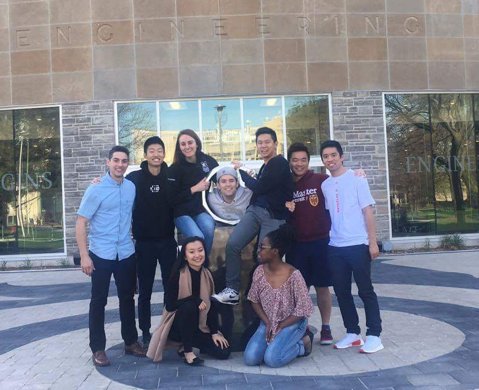

Tommy Kwan
Tommy Kwan
Takeaways From University
A tale of my university journey from beginning to end and the key things I learned along the way.
Wednesday, June 12, 2019

University is full of late nights and black coffees. It's easy to get lost in the piles of assignments and deadlines. I learned many lessons along the way that I want to share and that I wish I knew during my journey.
Learning How To Learn
If you asked me a question from my first year calculus course right now, there is absolutely no way I'd remember how to do it. Heck, even if you asked me a week after the exam, there is probably just a slim chance I'd be able to do the question.
The key thing I learned from university is how to learn. For me, lectures by themselves were insufficient. However, I found that reading the supplementary notes or assignments connected many of the dots during lecture that I had missed.
On top of this, I found that the programming way of thought was very effective to my learning. By breaking down lectures into smaller pieces similar to breaking down code into individual sections, I found that I was able to absorb information much more efficiently.
Find What Makes You Productive
As a person that is easily distracted by anything, it was important for me to find an effective way to get into the working and productive zone. I found that I was the most productive at a libraries as seeing others working forces me to work as well. The library cannot be too loud, but also not too quiet as to be able to hear conversations. Low volume non-hip-hop music also helped me concentrate. Also, it is important to have a goal on what you want to finish (for example, how many chapters to study) in your work session.
Prevent Burnout
Although school is non-stop homework and assignments, it is important to prevent burnout by taking your mind off school. I wish I had taken burnout more seriously as it severely hindered my performance and clouded my ability to learn. Always find time to do things you love such as learning an instrument or watch a couple of episodes of your favourite show.
You (Most Likely) Cannot Do It Yourself
My friends were a large part in keeping me sane during my university journey. As you and your friends laugh about how impossible a certain question or assignment is, you gain a sense of relief that you are not the only one struggling. By working with others, you gain much more perspective than working by yourself. Friends make the end just that much sweeter as they went through the same journey as you.
Only You Know You
No one knows you better than yourself. Only you know what you can and cannot do. Don't kick yourself down. If you fall, pick yourself back up because tomorrow is a new day!